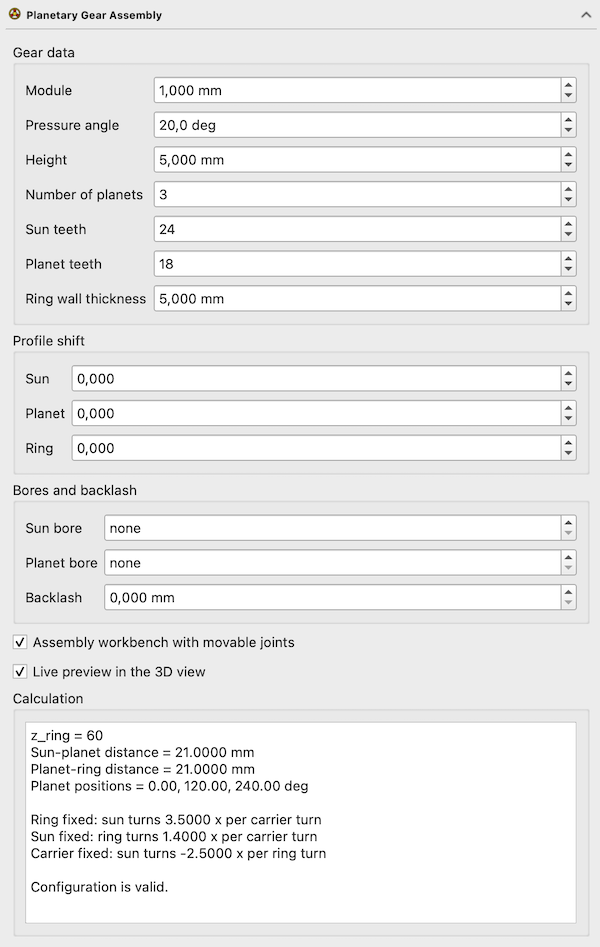

FCGear PlanetaryGear/fr
This documentation is not finished. Please help and contribute documentation.
GuiCommand model explains how commands should be documented. Browse Category:UnfinishedDocu to see more incomplete pages like this one. See Category:Command Reference for all commands.
See WikiPages to learn about editing the wiki pages, and go to Help FreeCAD to learn about other ways in which you can contribute.
|
FCGear Train épicycloïdal |
| Emplacement du menu |
|---|
| Gear → Train épicycloïdal |
| Ateliers |
| Gear |
| Raccourci par défaut |
| Aucun |
| Introduit dans la version |
| 1.4.0 |
| Voir aussi |
| Aucun |
Description
La commande FCGear Train épicycloïdal permet de calculer et de créer un train épicycloïdal. Un aperçu en temps réel aide à trouver les paramètres valides.
{kind=link}


Aperçu en direct dans la vue 3D → Train épicycloïdal terminé (couleurs ajoutées pour plus de clarté)
Utilisation
- Il existe plusieurs façons de lancer la commande :
- Cliquez sur le bouton Train épicycloïdal.
- Sélectionnez l'option Gear → Train épicycloïdal du menu.
- Le panneau de tâches Train épicycloïdal s'ouvre.
- Ajustez les paramètres et cliquez sur OK pour terminer la configuration et fermer le panneau de tâches.
- Un assemblage, un objet PlanetaryGear, est créé.
- Vous pouvez régler d'autres paramètres dans la vue rapport.
Panneau des tâches
{kind=link}

Ce panneau de tâches ne peut être utilisé pour effectuer des réglages qu'avant la création du train épicycloïdal. Les valeurs saisies sont enregistrées dans les propriétés de l'objet PlanetaryGear_Configuration et automatiquement répercutées dans les propriétés des objets d'engrenage. Une fois l'engrenage créé, les paramètres peuvent toujours être modifiés dans la vue rapport.
Données d'engrenages
- Module : définit la propriété DonnéesModule.
- Angle de pression : définit la propriété Donnéespressure_angle.
- Hauteur : définit la propriété Donnéesheight.
- Nombre de planètes : définit la propriété Donnéesnum_planets.
- Dents du soleil : définit la propriété Donnéesz_sun.
- Dents des planètes : définit la propriété Donnéesz_planet.
- Épaisseur de la paroi de l'anneau : définit la propriété Donnéesring_thickness.
Arbre du profil
- Soleil : définit la propriété Donnéesshift_sun.
- Planète : définit la propriété Donnéesshift_planet.
- Couronne : définit la propriété Donnéesshift_ring.
Alésages et jeu
- Alésage du soleil : définit la propriété Donnéeshole_sun.
- Alésage des planètes : définit la propriété Donnéeshole_planets.
- Jeu : définit la propriété Donnéesbacklash.
Cases à cocher
- Banc d'assemblage avec articulations mobiles : définit la propriété Donnéesuse_assembly.
- Aperçu en temps réel dans la vue 3D : active ou désactive l'aperçu en temps réel.
Calculs
Cette section se compose d'une liste dynamique affichant les valeurs calculées des propriétés du groupe calculées :
- z_ring = propriété Donnéesz_ring.
- Distance Soleil-planète = propriété Donnéessun_planet_distance.
- Distance planète-anneau = propriété Donnéessun_planet_distance. (il n'y a pas de propriété distincte, les deux distances dépendent du rayon du cercle primitif des engrenages planétaires)
- Couronne fixe = propriété Donnéesratio_ring_fixed.
- Sun fixed et Carrier fixed semblent être calculées en interne et ne correspondent à aucune propriété.
- La ligne du bas affiche le contenu de la propriété Donnéesvalidation_message, ou « La configuration est valide » si le contenu est « OK ».
Propriétés
Voir aussi : Éditeur de propriétés
Un objet PlanetaryGear de FCGear est dérivé d'un objet Assembly::AssemblyObject et hérite de toutes ses propriétés. Il dispose également des propriétés supplémentaires suivantes :
Données
Part
- Données_Part_ShapeCache (
ShapeCache) :
Un objet FCGear de type PlanetaryGear_Configuration est dérivé d'un objet App::FeaturePython et hérite de toutes ses propriétés. Il dispose également des propriétés supplémentaires suivantes :
Données
accuracy
- Donnéesnumpoints (
integer) : - Donnéessimple (
Bool) :
assembly
- Donnéesassembly (
Link): Assembly container - Donnéescarrier (
Link): Planet carrier - Donnéesuse_assembly (
Bool): Insert gears into an Assembly container and ground the ring gear
computed
- Donnéesratio_ring_fixed (
Float): Ratio (carrier / sun) with ring fixed - Donnéessun_planet_distance (
Length): Sun-planet centre distance - Donnéesvalidation_message (
String): Validation messages - Donnéesz_ring (
Integer): Ring gear teeth
fillets
- Donnéeshead_fillet (
Float): Fillet radius at the tooth tip, as a fraction of the module - Donnéesroot_fillet (
Float): Fillet radius at the tooth root, as a fraction of the module
gears
- Donnéesplanet_gears (
LinkList): Planet gears - Donnéesring_gear (
Link): Ring gear - Donnéessun_gear (
Link): Sun gear
helical
- Donnéesdouble_helix (
Bool): Make every gear a herringbone gear - Donnéeshelix_angle (
Angle): Helix angle of every gear
hole
- Donnéeshole_planets (
Length): Bore diameter of the planet gears (0 for no bore) - Donnéeshole_sun (
Length): Bore diameter of the sun gear (0 for no bore)
kinematics
- Donnéescarrier_angle (
Angle): Carrier rotation angle
parameters
- Donnéesheight (
Length): Gear height - Donnéesmodule (
Length): Module - Donnéesnum_planets (
Integer): Number of planet gears - Donnéespressure_angle (
Angle): Pressure angle - Donnéesring_thickness (
Length): Wall thickness of the ring gear rim - Donnéesshift_planet (
Float): Planet profile shift - Donnéesshift_ring (
Float): Ring profile shift - Donnéesshift_sun (
Float): Sun profile shift - Donnéesz_planet (
Integer): Planet gear teeth - Donnéesz_sun (
Integer): Sun gear teeth
tolerance
- Donnéesbacklash (
Length): Backlash of every mesh - Donnéesclearance (
Float): Clearance between tooth tip and root - Donnéeshead (
Float): Addendum factor of sun and planet gears - Donnéeshead_ring (
Float): Addendum factor of the ring gear
- ...À définir...
version
- Donnéesversion (
String) : la version de freecad.gears.
Pour les propriétés de l'objet RingGear, voir Roue dentée à développante interne, et pour celles des objets SunGear et PlanetGear, voir Roue dentée à développante.
Remarques
Cet outil ne fonctionne pas encore correctement avec la version « Assembly » de xwzCAD 2.1-pre. Les objets semblent s'assembler correctement, mais leur positionnement ne fonctionne pas.